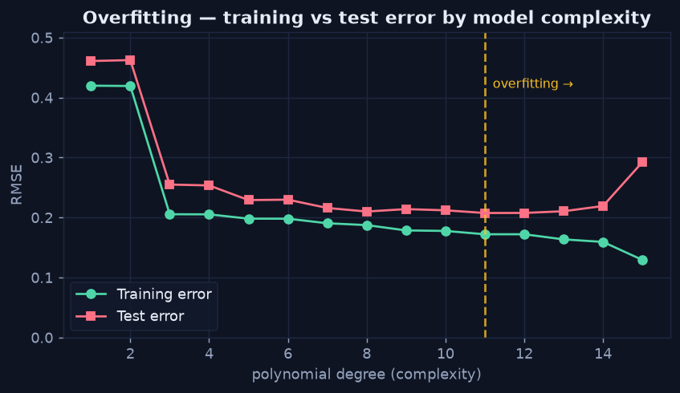

The Train/Test Split & Overfitting
Chapter 2 — Score on What the Model Never Saw
A model that memorizes its training data can look perfect and still be useless. The single most important habit in predictive analytics is to hold back data: train on one part, and measure performance only on a part the model never saw. If it does well on unseen data, the pattern is real. If it aces training but fails on the held-out set, it has overfit — memorized noise instead of learning signal.
The Split, in One Call
Python · scikit-learn
from sklearn.model_selection import train_test_split
X_train, X_test, y_train, y_test = train_test_split(
X, y, test_size=0.25, random_state=42)
# Fit on X_train only; report metrics on X_test only.For time-based problems, don't split randomly — split by time (train on the past, test on the most recent period) so the evaluation mirrors how the model will actually be used.
Seeing Overfitting Happen
The clearest way to understand overfitting is to watch training and test error as a model grows more complex. The chart below fits polynomials of increasing degree to a noisy signal. Training error keeps falling — a complex enough curve can thread every training point. But test error bottoms out and then climbs: past a certain complexity the model is fitting the noise, and its performance on new data gets worse. The gap between the two lines is the overfitting.
Python · numpy
for degree in range(1, 16):
coef = np.polyfit(x_train, y_train, degree) # fit on train
train_rmse = rmse(np.polyval(coef, x_train), y_train)
test_rmse = rmse(np.polyval(coef, x_test), y_test) # judge on test
# train error always drops; test error turns back up where overfitting begins
Training error always improves with complexity; test error turns back up where the model starts memorizing noise. The sweet spot is the test-error minimum.
The Lessons
- Report performance only on the held-out test set — never the training score.
- The best model is the one that minimizes test error, not training error.
- Guard against data leakage: no feature may carry information unavailable at prediction time, and the test set must never influence training.
- When data is scarce, cross-validation (repeating the split several ways) gives a more stable estimate than a single split.